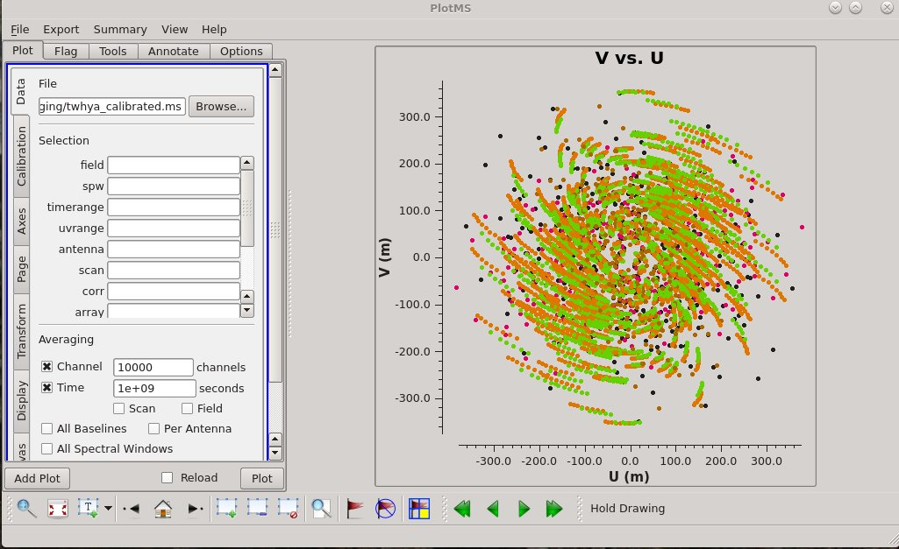
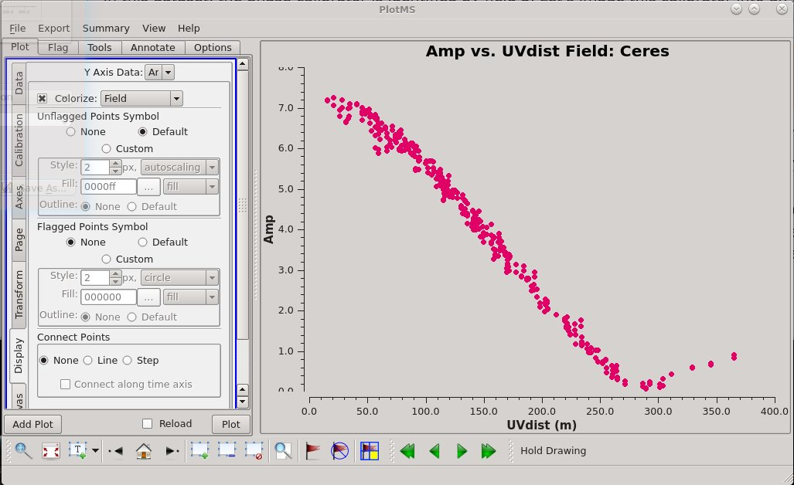
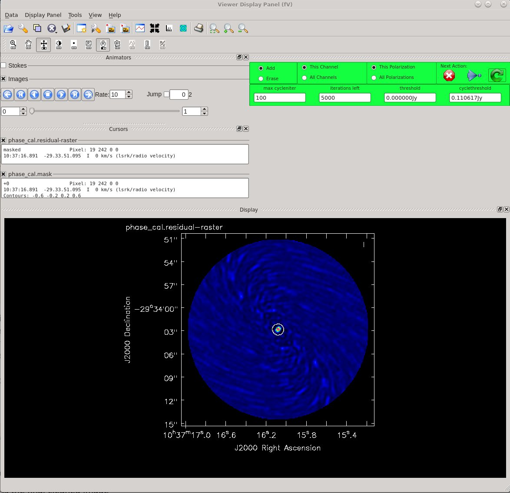
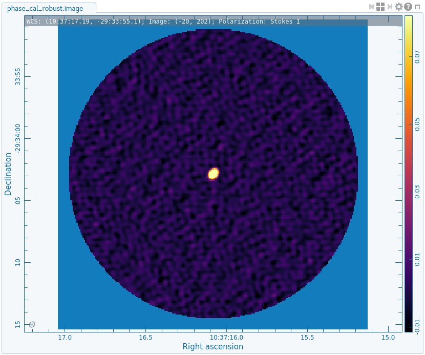
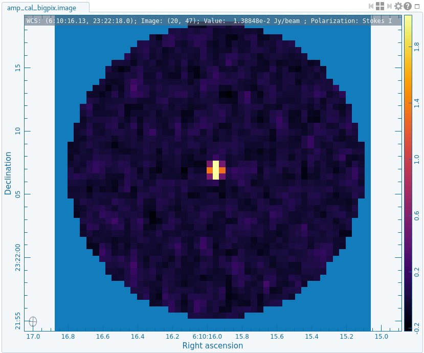
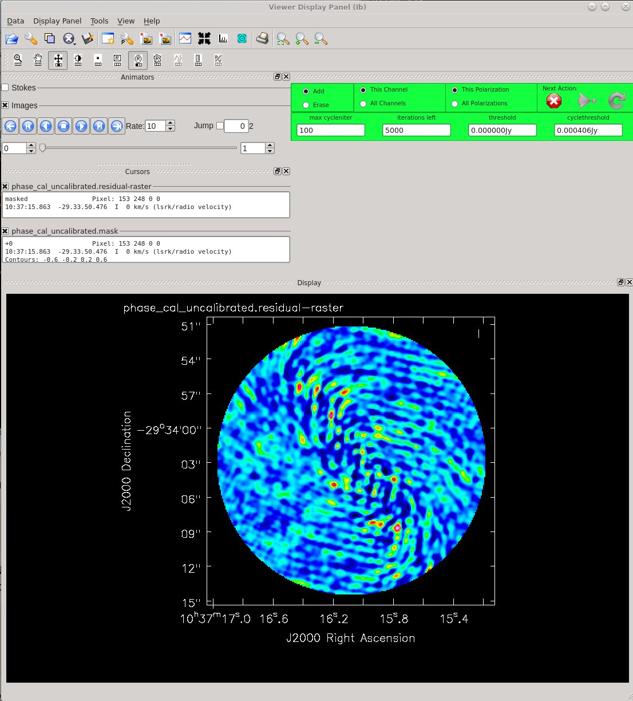
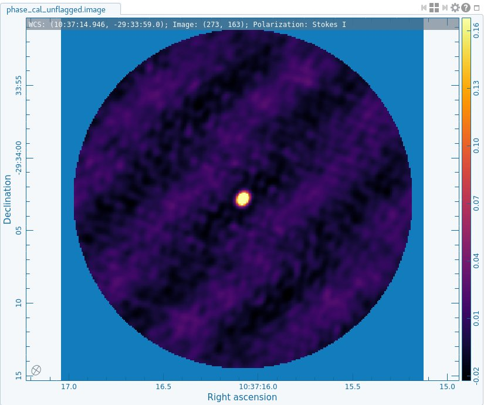
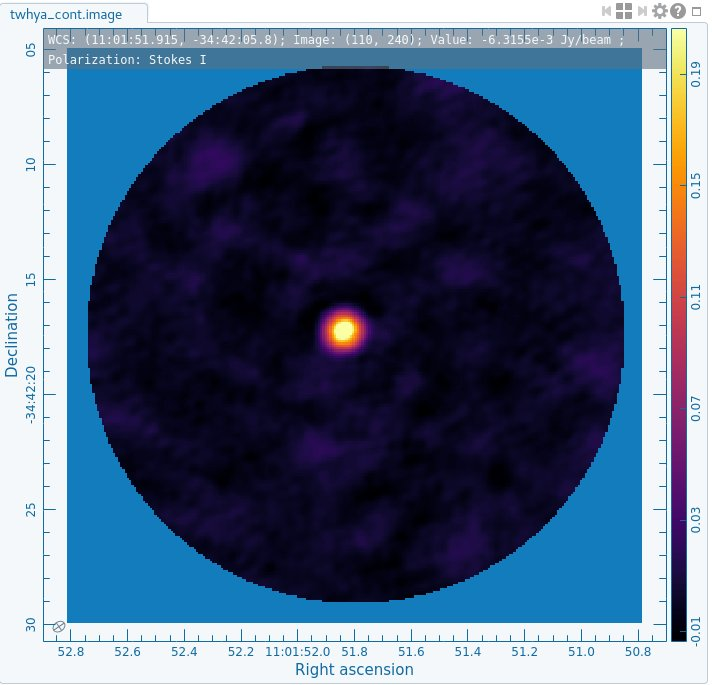
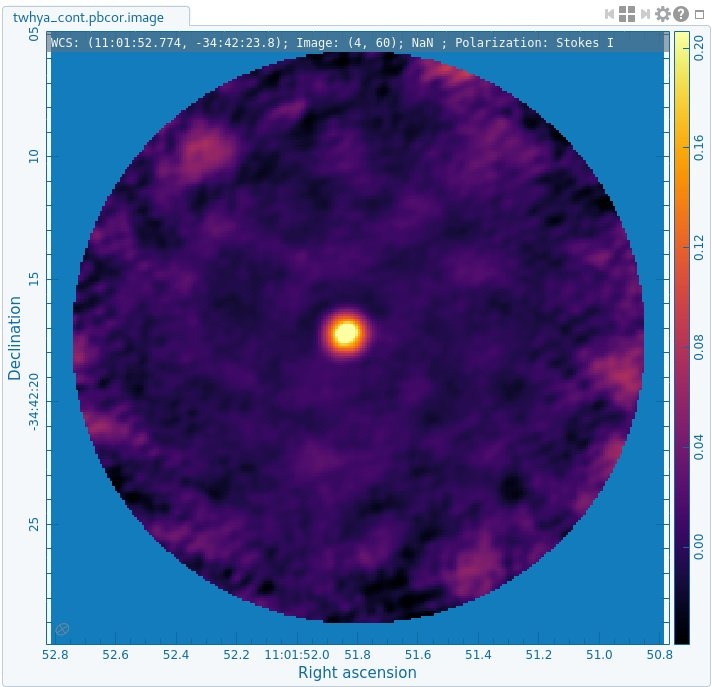

First Look at Imaging
About this Guide
This guide features CARTA, the “Cube Analysis and Rendering Tool for Astronomy,” which is the new NRAO visualization tool for images and cubes. The CASA viewer (imview) has not been maintained for a few years and will be removed from future versions of CASA. We strongly recommend using CARTA, as it provides a much more efficient, stable, and feature rich user experience. A comparison of the CASA viewer and CARTA, as well as instructions on how to use CARTA at NRAO, is provided in the CARTA section of the CASA docs.
The purpose of this tutorial is to provide a first look at imaging ALMA data for those new to CASA.
Data delivered by ALMA is pre-calibrated either by ARC staff or by the ALMA calibration pipeline. The delivered data is ready for imaging. This tutorial demonstrates the basic procedures that will help you complete the imaging steps.
This guide covers the same material used in hands-on training sessions at NRAO Community Days events and ALMA Data Reduction tutorials presented by NAASC staff.
Getting CASA
If you do not already have CASA installed on your machine, you will have to download and install it.
Download and installation instructions are available here:
About the Sample Data: Continuum and N2H+ in TW Hydra
The data for this example comes from ALMA Project 2011.0.00340.S, “Searching for H2D+ in the disk of TW Hya v1.5”, for which the PI is Chunhua Qi. Part of the data for this project has been published in [http://adsabs.harvard.edu/abs/2013Sci…341..630Q Qi et al. 2013].
The original observation had three scientific objectives:
Image the submm continuum structure in TW Hydra
Image the H2D+ line structure (rest frequency 372.42138 GHz)
Image the N2H+ line structure (rest frequency 372.67249 GHz)
The data used in our tutorial has already been calibrated. Furthermore, to make the data set more manageable, we have reduced it in size by averaging in time and frequency. Our goal will be to image the continuum emission and the N2H+ spectral line, which is bright and well suited for demonstrating the imaging techniques.
The spectral window we will image covers 234.375 MHz in bandwidth, and contains 384 channels spaced by 610 kHz. The data includes observations from 19 of the ALMA 12-m main array antennas, observed during Early Science Cycle 0.
Getting the Data
The data used in this tutorial is part of a larger data package used for NRAO calibration and imaging tutorials. If you plan on working through all of the “First Look” tutorials for CASA beginners, it is worth downloading the entire package now. If you plan on working through just this imaging tutorial then you can download a smaller data package (see below).
The complete package (1.8G tarred and zipped, 2.6G unpacked) is available here:
https://bulk.cv.nrao.edu/almadata/public/casaguides/FirstLook_TWHya_Band7_6.6.1/
You can then unpack the data as follows:
[ ]:
%%bash
# In bash
tar -xvzf twhya_firstlook.tgz
For the imaging tutorial, we are interested in the data that have been flagged and calibrated. The relevant data set is called “twhya_calibrated.ms”. You should copy this data set into a new working directory, and you will start CASA from that directory. (If you want to run the script created using extractCASAscript.py, found in the Extracting scripts from these tutorials guide, you will want to place the extracted script in your MyTutorial directory.)
[ ]:
%%bash
# In bash
cd working
tar -xvf twhya_calibrated.ms.tar
cd ..
mkdir MyTutorial
cd MyTutorial
cp -r ../working/twhya_calibrated.ms .
Alternatively, if you do not want to download the full 1.8G data package, you can download just the smaller data file (416M tarred, 1G unpacked) needed specifically for this tutorial as follows:
[ ]:
%%bash
# In bash
mkdir MyTutorial
cd MyTutorial
wget -r -np -nH --cut-dirs=4 --reject "index.html*" https://bulk.cv.nrao.edu/almadata/public/casaguides/FirstLook_TWHya_Band7_6.6.1/twhya_calibrated.ms.tar
Or you can download the file via your browser at the following link: https://bulk.cv.nrao.edu/almadata/public/casaguides/FirstLook_TWHya_Band7_6.6.1/twhya_calibrated.ms.tar
Starting CASA
At this point you should be working in a unix shell from the directory that contains the data. An “ls” command should show you the data file “twhya_calibrated.ms” in the current working directory.
[ ]:
%%bash
# In bash
ls
And now you can start CASA:
[ ]:
%%bash
# In bash
casa
You will notice that CASA opens a message window, for feedback from CASA tasks. The CASA prompt is presented in the terminal window. CASA is running on a python interpreter, so python syntax is valid here. (NOTE: If you are working on NRAO machines, call casa-alma instead of simply casa to get the current version being used for ALMA data.)
When you are finished working with your data, you can end your CASA session by typing “exit” at the command prompt.
Some CASA basics
A complete description of CASA is available in the documentation. Here we will touch on a couple of useful concepts to get us started.
A few unix commands work directly in CASA, for example you can try the “ls” command and the “pwd” command:
[ ]:
# In CASA
ls
pwd
You can access all operating system commands as follows:
[ ]:
# In CASA
os.system('ls')
It is often convenient to store CASA instructions in a python script. If you have such a script, it can be executed using the following syntax:
[ ]:
# In CASA
# if you are running this as an extracted script, comment this line out
execfile('my_script.py',globals())
Using tasks, and getting oriented with the data
The first step in all data reduction with CASA is to examine the header information and data structure for the data set using the task. In CASA, there are two ways to execute tasks. You can either set the parameters one-by-one and then instruct CASA to “go” when you’re ready, or you can execute the task with a single command. For example, here is how you can use the first method:
[ ]:
# In CASA
inp listobs
vis='twhya_calibrated.ms'
go
And here is an example of running the task with a single call from the command line:
[ ]:
# In CASA
listobs(vis='twhya_calibrated.ms')
This single call is the preferred method, as it works in scripts. The output for is printed to the CASA Message window. If you would like to save the output to a text file as well, you can give a file name to save to:
[ ]:
# In CASA
listobs(vis='twhya_calibrated.ms',listfile='twhya_listobs.txt')
Note that you can get help on any CASA task:
[ ]:
# In CASA
help listobs
You can exit the help menu at any time by typing the letter “q”.
The listobs output for our data set is as follows:
================================================================================
MeasurementSet Name: /path/to/my/directory/MyTutorial/twhya_calibrated.ms MS Version 2
================================================================================
Observer: cqi Project: uid://A002/X327408/X6f
Observation: ALMA
Data records: 68335 Total elapsed time = 5647.68 seconds
Observed from 19-Nov-2012/07:36:57.0 to 19-Nov-2012/09:11:04.7 (UTC)
ObservationID = 0 ArrayID = 0
Date Timerange (UTC) Scan FldId FieldName nRows SpwIds Average Interval(s) ScanIntent
19-Nov-2012/07:36:57.0 - 07:39:13.1 4 0 J0522-364 3420 [0] [6.05] [CALIBRATE_BANDPASS#ON_SOURCE,CALIBRATE_PHASE#ON_SOURCE,CALIBRATE_WVR#ON_SOURCE]
07:44:45.2 - 07:47:01.2 7 2 Ceres 3420 [0] [6.05] [CALIBRATE_AMPLI#ON_SOURCE,CALIBRATE_PHASE#ON_SOURCE,CALIBRATE_WVR#ON_SOURCE]
07:52:42.0 - 07:53:47.6 10 3 J1037-295 1710 [0] [6.05] [CALIBRATE_PHASE#ON_SOURCE,CALIBRATE_WVR#ON_SOURCE]
07:56:23.5 - 08:02:11.3 12 5 TW Hya 7616 [0] [6.05] [OBSERVE_TARGET#ON_SOURCE]
08:04:36.3 - 08:05:41.9 14 3 J1037-295 1710 [0] [6.05] [CALIBRATE_PHASE#ON_SOURCE,CALIBRATE_WVR#ON_SOURCE]
08:08:09.6 - 08:13:57.3 16 5 TW Hya 8442 [0] [6.05] [OBSERVE_TARGET#ON_SOURCE]
08:16:20.6 - 08:17:26.2 18 3 J1037-295 1710 [0] [6.05] [CALIBRATE_PHASE#ON_SOURCE,CALIBRATE_WVR#ON_SOURCE]
08:19:53.9 - 08:25:41.7 20 5 TW Hya 8389 [0] [6.05] [OBSERVE_TARGET#ON_SOURCE]
08:28:17.1 - 08:29:22.6 22 3 J1037-295 1710 [0] [6.05] [CALIBRATE_PHASE#ON_SOURCE,CALIBRATE_WVR#ON_SOURCE]
08:32:00.5 - 08:37:48.2 24 5 TW Hya 8409 [0] [6.05] [OBSERVE_TARGET#ON_SOURCE]
08:40:11.9 - 08:41:17.4 26 3 J1037-295 1710 [0] [6.05] [CALIBRATE_PHASE#ON_SOURCE,CALIBRATE_WVR#ON_SOURCE]
08:43:45.6 - 08:49:33.4 28 5 TW Hya 8514 [0] [6.05] [OBSERVE_TARGET#ON_SOURCE]
08:51:57.1 - 08:53:02.6 30 3 J1037-295 1710 [0] [6.05] [CALIBRATE_PHASE#ON_SOURCE,CALIBRATE_WVR#ON_SOURCE]
08:58:12.0 - 09:00:28.1 33 6 3c279 3043 [0] [6.05] [CALIBRATE_BANDPASS#ON_SOURCE,CALIBRATE_PHASE#ON_SOURCE,CALIBRATE_WVR#ON_SOURCE]
09:01:35.7 - 09:02:41.2 34 3 J1037-295 1710 [0] [6.05] [CALIBRATE_PHASE#ON_SOURCE,CALIBRATE_WVR#ON_SOURCE]
09:05:15.6 - 09:07:31.6 36 5 TW Hya 3402 [0] [6.05] [OBSERVE_TARGET#ON_SOURCE]
09:09:59.1 - 09:11:04.7 38 3 J1037-295 1710 [0] [6.05] [CALIBRATE_PHASE#ON_SOURCE,CALIBRATE_WVR#ON_SOURCE]
(nRows = Total number of rows per scan)
Fields: 5
ID Code Name RA Decl Epoch SrcId nRows
0 none J0522-364 05:22:57.984648 -36.27.30.85128 J2000 0 3420
2 none Ceres 06:10:15.950590 +23.22.06.90668 J2000 2 3420
3 none J1037-295 10:37:16.079736 -29.34.02.81316 J2000 3 13680
5 none TW Hya 11:01:51.796000 -34.42.17.36600 J2000 4 44772
6 none 3c279 12:56:11.166576 -05.47.21.52464 J2000 5 3043
Spectral Windows: (1 unique spectral windows and 1 unique polarization setups)
SpwID Name #Chans Frame Ch0(MHz) ChanWid(kHz) TotBW(kHz) CtrFreq(MHz) BBC Num Corrs
0 ALMA_RB_07#BB_2#SW-01#FULL_RES 384 TOPO 372533.086 610.352 234375.0 372649.9688 2 XX YY
Sources: 5
ID Name SpwId RestFreq(MHz) SysVel(km/s)
0 J0522-364 0 - -
1 Ceres 0 - -
2 J1037-295 0 - -
3 TW Hya 0 - -
4 3c279 0 - -
Antennas: 19:
ID Name Station Diam. Long. Lat. Offset from array center (m) ITRF Geocentric coordinates (m)
East North Elevation x y z
1 DA42 A050 12.0 m -067.45.16.2 -22.53.29.3 43.0352 -744.9713 21.6702 2225079.880016 -5440041.377534 -2481724.598031
2 DA44 A068 12.0 m -067.45.20.6 -22.53.25.7 -82.4232 -631.7828 23.5810 2224981.097784 -5440131.250387 -2481621.066374
3 DA45 A070 12.0 m -067.45.11.9 -22.53.29.3 166.1833 -743.4934 19.8811 2225193.450167 -5439993.764157 -2481722.540534
4 DA46 A067 12.0 m -067.45.12.7 -22.53.27.2 142.4097 -678.7318 20.1280 2225181.070532 -5440026.290790 -2481662.975103
5 DA48 A046 12.0 m -067.45.17.0 -22.53.29.3 21.4267 -742.7987 21.6757 2225060.202580 -5440050.344436 -2481722.598651
6 DA49 A029 12.0 m -067.45.18.2 -22.53.25.8 -12.9134 -636.4552 22.1350 2225044.239583 -5440102.022535 -2481624.808405
7 DA50 A045 12.0 m -067.45.17.9 -22.53.30.1 -5.4183 -767.4398 22.6034 2225032.051652 -5440052.426015 -2481745.660003
9 DV02 A077 12.0 m -067.45.10.1 -22.53.25.9 217.6299 -637.5333 15.8376 2225255.259272 -5440008.987869 -2481623.352052
11 DV05 A082 12.0 m -067.45.08.3 -22.53.29.2 269.0433 -740.9521 15.7832 2225287.593766 -5439952.243679 -2481718.605314
12 DV06 A037 12.0 m -067.45.17.5 -22.53.28.8 6.7403 -727.3003 21.2086 2225048.729287 -5440061.085777 -2481708.139136
14 DV08 A021 12.0 m -067.45.17.2 -22.53.27.0 14.3196 -672.8108 21.3420 2225063.814715 -5440077.948261 -2481657.992572
15 DV10 A071 12.0 m -067.45.19.9 -22.53.23.5 -60.7887 -563.2541 23.3799 2225011.141945 -5440147.560932 -2481557.855663
16 DV13 A072 12.0 m -067.45.12.6 -22.53.24.0 147.1742 -580.5887 18.1825 2225199.254375 -5440058.161494 -2481571.803699
17 DV15 A074 12.0 m -067.45.12.1 -22.53.32.0 161.8159 -828.6196 18.7688 2225176.483514 -5439963.820451 -2481800.529842
18 DV16 A069 12.0 m -067.45.21.3 -22.53.30.2 -101.4797 -770.1047 23.2972 2224942.993176 -5440088.421459 -2481748.384855
19 DV17 A138 12.0 m -067.45.17.1 -22.53.34.4 19.1461 -901.2603 26.0137 2225036.269025 -5439997.853009 -2481870.267607
20 DV18 A053 12.0 m -067.45.17.3 -22.53.31.2 12.5939 -802.9941 21.5281 2225043.111690 -5440031.889497 -2481777.995870
24 DV22 A011 12.0 m -067.45.14.4 -22.53.28.4 95.9131 -716.5005 21.0898 2225132.810230 -5440031.115405 -2481698.143589
25 DV23 A007 12.0 m -067.45.15.1 -22.53.27.3 74.0152 -681.2926 21.3231 2225117.809276 -5440052.280005 -2481665.799049
Inspecting the data
The plotms task is an important and versatile tool that allows the user to look at the UV data in a graphical manner. Let’s start by plotting the UV coverage for our data.
[ ]:
# In CASA
plotms(vis='twhya_calibrated.ms', xaxis='u', yaxis='v', avgchannel='10000', avgspw=False, avgtime='1e9', avgscan=False, coloraxis='field', showgui=True)

Figure 1: UV coverage for the TW Hya data set.
You should see a GUI as in Figure 1. The colors in the UV coverage plot identify different observing targets. Here we use arbitrarily large values for channels to average over as well as time to average over, to be sure that the average is done over all the channels for the full time of the data set. You will see a warning about averaging over more channels than exist, but will simply average the channels that do exist.

Figure 2: Amplitude vs. UVdist for Ceres.
At this point, you can experiment with the GUI. For example, it is often interesting and useful to examine the plot of amplitude vs. UV distance. Select the “Axes” tab, then set the X Axis to “UVDist” and the Data setting to “Amp”. Under the “Page” tab, set Iteration Axis to “Field”. Then click the Plot button.
You can step through the different calibrators and science targets using the green arrow buttons at the bottom of the GUI. Notice that for some sources, including Ceres, we can see the amplitude change as a function of UV distance as in Figure 2. These sources are spatially resolved, and we will see this clearly in the imaging below.
First Look at TCLEAN
‘’Starting with CASA 4.7, the imaging capabilities of have been refactored and improved in a task called , which is called by the user in largely the same way as clean. In this guide, we will use solely tclean. In the guide TCLEAN and ALMA, the differences in syntax between clean and tclean are made more explicit. For reference, legacy first look guides for older versions of CASA that use rather than for imaging are kept in Archived ALMA CASAguides. ‘’
In this dataset, the phase calibrator is identified by field 3. Let’s image this calibrator, as a simple source for a first attempt at tclean. We’ll image it into an image file called “phase_cal”. First, in case you’ve run this task before, let’s remove old versions of the image that use this name. (The “.*” is needed because imaging produces several files with the same root name).
[ ]:
# In CASA
os.system('rm -rf phase_cal.*')
Now we will use the task to do the imaging. Here is an explanation of how we set some of the parameters; see the documentation for a complete list of options.
We will first image the phase calibrator, and set the image name to “phase_cal”. To identify the phase calibrator in a measurement set, look at the ‘ScanIntent’ column in the output of . The phase calibrator should have the intent “CALIBRATE_PHASE#ON_SOURCE”. In this MS, the phase calibrator is J1037-295, identified by field = “3”.
We will use multifrequency synthesis (specmode = mfs) to make a single continuum image. Multifrequency synthesis combines data from all selected spectral channels into a single continuum image. If your observations cover a large frequency range, it is possible that the amplitude or structure of the source can change substantially with frequency. This is only a concern if the fractional bandwidth (delta_nu/nu_center) is greater than 10%. For this dataset it is not an issue. Therefore, we set deconvolver=hogbom, which uses nterms=1, telling tclean that each deconvolved component has a single amplitude at all frequencies.
We will image a single pointing, so we set gridder=’standard’. If we had multiple, contiguous pointings– or if we were simultaneously imaging 7m and 12m array data (even if only a single pointing of each)— we would need to set gridder=’mosaic’.
We set the cell size to 0.1 arcseconds, which places ~5 pixels across the synthesized beam. As a rule of thumb, we’d like ~5 pixels across the smallest direction of our elliptical beam. For a small dataset, you may be able to determine a good cell size with a quick imaging call, and note the beam calculated by tclean. For many ALMA projects, however, this could take a substantial amount of time! You can estimate what the cell size should be by looking again at the uv-coverage. Change the x-axis to uvwave, and the cell size is roughly 206265/(longest baseline in wavelengths)/(number of cells across the beam). For this MS, this works out to 0.09”, which we round up to 0.1”. As you will see, tclean reports a synthesized beam size of 0.51” x 0.42”, making this a decent choice.
We choose the image size then based on the cell size. We want our image to cover the primary beam of a single antenna. For single fields with the 7m antennas, the primary beam in arcseconds is ~ 10608/nu_GHz, where nu_GHz is the central frequency expressed in GHz, and for single fields with the 12m antennas, the primary beam in arcseconds is ~ 6300/nu_GHz. The TW Hya data were taken with 12m antennas at a central frequency of 372.650 GHz, giving a primary beam of about 17”. (For point sources, full coverage of the primary beam becomes less important, especially for well-known calibrators, and so you might see in the weblogs for your data that calibrator images are a bit smaller than the primary beam estimate would suggest. This is to save disk space and processing time during pipeline runs!)
Image sizes can be arbitrary but should be symmetrical. Good practice is probably to round up to the nearest 10 or 100 pixels and if tclean does not like your choice, it will recommend in the logger window a better choice. The size of the primary beam suggests an image size then of 17”/0.1 arcsec per cell = 170 cells. Note that with this image size, however, tclean will warn that there is a non-zero value at the edge of the primary beam. For well-known calibrators, this is likely not an issue, but we’ll increase the image size here just to demonstrate. At a size of 245 x 245, the non-zero value warning goes away, but now tclean suggests a more efficient image size of 250 rather than 245. Thus we will use an image size of 250x250 cells.
The task will start in interactive mode, which allows you to manually control the threshold, major cycles, and masking. For users familiar with , note that in contrast with the clean task, leaving niter (the maximum number of iterations) unset defaults to niter=0, and is being told not to do any cleaning. If there are no clean components in the model – for instance if this is the first invocation of tclean on this field and spectral window for the given set of visibilities (MS) – then what will be created is the dirty cube or image. Here, we first run tclean with niter unset.
[ ]:
# In CASA
tclean(vis='twhya_calibrated.ms',
imagename='phase_cal',
field='3',
spw='',
specmode='mfs',
deconvolver='hogbom',
gridder='standard',
imsize=[250,250],
cell=['0.1arcsec'],
weighting='briggs',
threshold='0.0mJy',
interactive=True)
CASA is sure to tell you that you haven’t done any cleaning with the following warning:
WARN task_tclean Restoring with an empty model image. Only residuals will be processed to form the output restored image.
Run the command again, this time with niter set to some (arbitrarily large) number:

Figure 3: The tclean GUI showing the clean mask circling the emission region.
[ ]:
# In CASA
os.system('rm -rf phase_cal.*')
tclean(vis='twhya_calibrated.ms',
imagename='phase_cal',
field='3',
spw='',
specmode='mfs',
deconvolver='hogbom',
gridder='standard',
imsize=[250,250],
cell=['0.1arcsec'],
weighting='briggs',
threshold='0mJy',
niter=5000,
interactive=True)
After running this task, you will be presented with the GUI as shown in Figure 3.
In the TCLEAN viewer, make sure that your buttons are set to add a new oval mask region. You may need to click on the icon showing the “R” in an oval. Remember that the phase calibrator has been selected because it is a point source, so you should see a point source in the middle of the field. Draw an oval mask around the emission region (just the central dot). If you don’t like the region you’ve selected, hover the mouse over it and hit “Esc”. If you do like it, double click inside the oval and watch it turn white to create the mask (See Figure 3). When setting the clean mask, you should aim to capture the real emission and not much else. If you don’t like the mask you have created, toggle the “Add” option to “Erase”, draw a region around the mask, and then double click to remove the mask. In the “Next Action” section of the GUI, you will notice several control buttons. Hit the green circle button to begin the cleaning process. This will run a major cycle of cleaning and then return. After the first major cycle of cleaning, the plot displays the residual emission. Compare the brightness of the residuals with that of the source and with that of the noise. When you are satisfied (or when tclean has met the residual threshold, 0 mJy by default - meaning that it stops at the first negative), click the red “X” and tclean will terminate. In this example, two rounds of cleaning work well. For more complex targets you may need many rounds of cleaning, and it is possible to update and add new tclean regions after each major cycle, based on the look of the residuals. You’re aiming for the residuals inside the mask (i.e. the residuals left over for the source, after subtracting the scaled model) to look about the same as the noise outside the mask.
Have a quick look at the files that tclean has created.
[ ]:
# In CASA
ls
All the resulting files have the “phase_cal” prefix, with different extensions:
.image is the final cleaned image
.mask shows the clean mask, or the area that tclean cleaned
.model is the set of modeled clean components used by tclean (in Jy/pixel)
.pb shows the primary beam response
.residual shows what was left after you stopped tclean (the “dirty” part of the final image)
.psf shows the synthesized beam
.sumwt is a single pixel image containing sum of weights per plane
So much good stuff. You can look at all of these using CARTA. If you are using NRAO machines, you can navigate to your working directory in a terminal, and then type:
[ ]:
%%bash
# In bash
carta --no_browser
Copy the URL it returns and paste into a browser window to view your CARTA session.
Experiment with TCLEAN
includes a lot of options. Remember, you can see the list of inputs for the task by typing “inp tclean”. Now is a good time to get a feel for what these options can do. One option that is very commonly tweaked by the user is the weighting scheme used to grid the UV data into a fourier-plane image. This weighting was “robust=0.5” in the first example (by default). Try a few different values of the robust parameter between -2 (uniform) and 2 (natural). Pay attention to how the beam size changes, as well as the noise in the final image. You can check the noise level using CARTA – draw a box on the image and click the ‘Statistics’ widget (looks like a calculator) at the top of the window. Remove old versions of the image in case you have run this before:
[ ]:
# In CASA
os.system('rm -rf phase_cal_robust.*')
Call tclean with briggs weighting and robust = -1. Make a clean mask and run a few cycles of tclean, until you are happy with the level of the residuals:

Figure 4: CARTA image of the phase calibrator after tclean with briggs weighting.
[ ]:
# In CASA
tclean(vis='twhya_calibrated.ms',
imagename='phase_cal_robust',
field='3',
spw='',
specmode='mfs',
gridder='standard',
deconvolver='hogbom',
imsize=[250,250],
cell=['0.1arcsec'],
weighting='briggs',
robust=-1.0,
threshold='0mJy',
niter=5000,
interactive=True)
Now is a good time to experiment a bit with tclean - try imaging the other calibrators (fields 0 and 2; check the ‘ScanIntent’ again in the output) and making the image size and cell size larger and smaller.
For example, let’s look at the marginally-resolved primary (flux) calibrator, Ceres (field 2; ‘ScanIntent’ = ‘CALIBRATE_AMPLI#ON_SOURCE’):
[ ]:
# In CASA
os.system('rm -rf amp_cal_robust.*')
tclean(vis='twhya_calibrated.ms',
imagename='amp_cal_robust',
field='2',
spw='',
specmode='mfs',
gridder='standard',
deconvolver='hogbom',
imsize=[250,250],
cell=['0.1arcsec'],
weighting='briggs',
threshold='0mJy',
niter=5000,
interactive=True)
Look at the image in CARTA. Notice that Ceres is somewhat resolved, as we saw from the plots above.
If you try a really big pixel size you will see things break. It is recommended to have the pixel size small compared to the synthesized beam for tclean purposes (tclean quantizes the deconvolution in units of pixels). When the pixel size is big compared to the synthesized beam the imaging in general will degrade, even independent of how you tclean.

Figure 5: CARTA image of the amplitude calibrator after tclean with a large pixel size.
[ ]:
# In CASA
os.system('rm -rf amp_cal_bigpix.*')
tclean(vis='twhya_calibrated.ms',
imagename='amp_cal_bigpix',
field='2',
spw='',
specmode='mfs',
gridder='standard',
deconvolver='hogbom',
imsize=[50,50],
cell=['0.5arcsec'],
weighting='briggs',
threshold='0mJy',
niter=5000,
interactive=True)
To see the issues clearly here, compare the beam in this image to the one in the first image we made (with 5x smaller pixels).
ASIDE: See the effects of calibration and flagging
This section gives an aside intended to demonstrate the effect of calibration. If you are focused on learning only imaging, feel free to skip this section.
The data that we are imaging went through a careful and detailed calibration process. What effect did this actually have? Let’s image the phase calibrator with and without calibration and with and without flagging just to get an idea of how our processing changed the final image.
First you need to copy the uncalibrated data from the working directory. This step will differ depending on where you are storing the data. The net result we want is to have a copy of the uncalibrated data in the current working directory.
If you downloaded the full data package, copy the uncalibrated data to your current working directory.
[ ]:
# In CASA
os.system('tar -xvf ../working/twhya_uncalibrated.ms.tar')
If you downloaded only the calibrated data set, you can use “wget” again to download the uncalibrated data at this time:
[ ]:
%%bash
# In bash
% wget -r -np -nH --cut-dirs=4 --reject "index.html*" https://bulk.cv.nrao.edu/almadata/public/ALMA_firstlooks/twhya_uncalibrated.ms.tar
Or you can download the file via your browser at the following links: https://bulk.cv.nrao.edu/almadata/public/ALMA_firstlooks/twhya_uncalibrated.ms.tar
Now let’s TCLEAN the uncalibrated data, again focusing on the phase calibrator (field 3) and using the same calls as before.

Figure 6: The phase calibrator without any calibration.
[ ]:
# In CASA
os.system('rm -rf phase_cal_uncalibrated.*')
tclean(vis='twhya_uncalibrated.ms',
imagename='phase_cal_uncalibrated',
field='3',
spw='',
specmode='mfs',
gridder='standard',
deconvolver='hogbom',
imsize=[250,250],
cell=['0.1arcsec'],
weighting='briggs',
threshold='0mJy',
niter=5000,
interactive=True)
If you can find a source to tclean then more power to you, but this is a mess. It’s a good thing that we calibrated… In the raw (but still Tsys and WVR corrected) data you can see echos of the calibrator throughout the field, but the calibration is required to make the image coherent. Inspect the imaged uncalibrated data using CARTA.
Now let’s see the effect that flagging had on the data. Copy the unflagged (but otherwise calibrated) data from the working directory to our local directory:
[ ]:
# In CASA
os.system('tar -xvf ../working/twhya_calibrated_unflagged.ms.tar')
or again, using wget:
[ ]:
%%bash
# In bash
% wget -r -np -nH --cut-dirs=4 --reject "index.html*" https://bulk.cv.nrao.edu/almadata/public/ALMA_firstlooks/twhya_calibrated_unflagged.ms.tar
Or you can download the file via your browser at the following links: https://bulk.cv.nrao.edu/almadata/public/ALMA_firstlooks/twhya_calibrated_unflagged.ms.tar
Now image the calibrated but unflagged data for the secondary calibrator using the same parameters as before.

Figure 7: CARTA image of the phase calibrator without any flagging of bad data.
[ ]:
# In CASA
os.system('rm -rf phase_cal_unflagged.*')
tclean(vis='twhya_calibrated_unflagged.ms',
imagename='phase_cal_unflagged',
field='3',
spw='',
specmode='mfs',
gridder='standard',
deconvolver='hogbom',
imsize=[250,250],
cell=['0.1arcsec'],
weighting='briggs',
threshold='0mJy',
niter=5000,
interactive=True)
In contrast to the uncalibrated data, the unflagged data are coherent, but they have clear artifacts in the residuals. Flagging has definitely improved the quality of the data, but in overall good quality data like we have here, we can see the target source.
Image the science target
Of course, the whole point of calibration is to calibrate the science data. Here, the TW Hydra observations use field 5, which we know from the output of , above. As the final step in the basic imaging tutorial, let’s now image the continuum in TW Hydra. First, we will “split out” the science data into its own data set using the CASA task . While not strictly necessary, this is a common step that makes managing the data easier. At the same time we will smooth (i.e. average) the data in frequency using width=8 to do the averaging. This reduces the data volume without losing much information, since we are really only interested in continuum imaging at this point. Although this data set was already designed to be manageable, this smoothing trick is good to keep in mind because ALMA can produce very large data sets.
[ ]:
# In CASA
os.system('rm -rf twhya_smoothed.ms')
split(vis='twhya_calibrated.ms', field='5', width='8', outputvis='twhya_smoothed.ms', datacolumn='data')
listobs('twhya_smoothed.ms')
Now make a continuum image of the split-out data. Notice that TW Hydra has now been re-labeled as field 0 in the new data set because we split out only that field. We’ll use the same tclean settings as for the phase calibrator, since we have covered the full primary beam with our image size and cell size combination. Again, specify interactive mode and leave the threshold unset for the time being.

Figure 8: Continuum image for TW Hydra.
[ ]:
# In CASA
os.system('rm -rf twhya_cont.*')
tclean(vis='twhya_smoothed.ms',
imagename='twhya_cont',
field='0',
spw='',
specmode='mfs',
gridder='standard',
deconvolver='hogbom',
imsize=[250,250],
cell=['0.1arcsec'],
weighting='briggs',
robust=0.5,
threshold='0mJy',
niter=5000,
interactive=True)
Draw a clean mask around the visible emission using the mask tools and then run tclean until the emission from the TW Hydra disk is less than or comparable to the residuals around it. In this interactive mode of cleaning, you decide when tclean should stop, and at that point you hit the red X. If instead you did want to clean automatically down to a threshold, you can specify a threshold that is a small multiple of the rms noise either in the call to tclean above or by typing it in to the tclean GUI if you started the session interactively.
Have a look at the image - TW Hydra is very bright and you can see that it is extended relative to the size of the beam, which is represented by an oval, with major and minor axes marked, in the very bottom left corner of the CARTA image window. The residuals aren’t perfect, but we will improve them in subsequent lessons.
But wait! you might be asking. Didn’t you say that there are spectral lines in this spectral window? Yes, the spectral window that we have imaged here as continuum also contains a N2H+ emission line. In this case, the N2H+ emission is faint enough that neglecting to flag the line channels before imaging makes no difference to the final continuum image. For this and the other continuum first look tutorials, we have thus ignored the line to focus on the basic steps of imaging and self-calibration. In general, however, you should flag channels containing emission lines in your own data prior to imaging the continuum. To see how to flag line emission prior to imaging the continuum in a spectral window, please see the more advanced tutorial at IRAS16293_Band9_-_Imaging.
Non-interactive clean
So far we have mostly followed an interactive process with tclean. tclean can also be set up to run without interactive guidance. The three main parameters to specify are the threshold at which to stop (when the maximum residual in the tclean region is lower than this threshold, tclean stops), the mask (the region in which tclean is willing to identify signal), and the maximum number of iterations. The max iterations is not strictly required and it is generally recommended that it be used as more of a failsafe. That is, set it to a number so high that if tclean gets there something has gone wrong.
First let’s take a stab at determining a clean mask. Look at the image you just made. All of the obvious emission is contained in a box that is bounded by pixel numbers in a range of something like (100,100) to (150,150). We’ll set that box to be a mask using the “mask” parameter in the call to tclean. You could also set it by supplying a file (for example the one created from your earlier interactive version of tclean).
Now let’s determine a stopping threshold for tclean. Again, look at the previous image using CARTA and draw a box well away from the source to estimate the noise. Like before, look at the ‘Statistics’ tab in the ‘Regions’ box of the interface to find the RMS noise. We see something like ~7 mJy/beam. Set the threshold to be about twice this, ~15 mJy/beam. A clean threshold several times the rms noise is usually recommended to avoid adding false sources to the deconvolved image. That is, you do not want tclean to treat a random noise spike as a source and deconvolve it from the image. This can be particularly problematic if you are doing self-calibration (a later lesson). Finally set niter=10000, which is a lot of iterations. We expect tclean to terminate before reaching this. For our purposes this is just a big number that’s designed to keep tclean from running forever.
[ ]:
# In CASA
os.system('rm -rf twhya_cont_auto.*')
tclean(vis='twhya_smoothed.ms',
imagename='twhya_cont_auto',
field='0',
spw='',
specmode='mfs',
gridder='standard',
deconvolver='hogbom',
imsize=[250,250],
cell=['0.1arcsec'],
mask='box [ [100pix , 100pix] , [150pix, 150pix] ]',
weighting='briggs',
robust=0.5,
threshold='15mJy',
niter=10000,
interactive=False)
Look ma, no hands!
This noninteractive mode can save you a lot of time and has the advantage of being very reproducible. Note that you also have a “hybrid” mode available by starting the tclean process with interactive=True, but then click the blue arrow button in the top right corner. This tells tclean to proceed until it hits the maximum number of iterations or the threshold. This combination mode is nice because you can manually draw the mask used to tclean. Note that you can also manually set both the threshold and the maximum number of iterations (which is the product of the number of major cycles and the iterations per cycle) in the viewer GUI. Note, however, that best practice for an image with uncertain calibration and especially one with a bright source, is to clean interactively at least the first time. In the case where an image may be “dynamic range limited” (i.e., the quality is set by the accuracy of calibration and deconvolution) it can be hard to predict the correct threshold.
As the cleaning cycles proceed, the residuals in the image should decrease. You can check this in the tclean output in the logger; if the residuals start to increase you may need to change your stopping threshold.
Primary beam correction
An important subtlety of is that by default the image produced by tclean is not corrected for the primary beam (the field of view) of the individual dishes in the array. The primary beam response is typically a Gaussian with value 1 at the center of the field. To form an astronomically correct image of the sky, the output of tclean needs to be divided by this primary beam (or, in the case of mosaics, the combination of primary beam patterns used to make the mosaic). For tclean, there are two ways to do this.
First, you can set the parameter pbcor = True when running tclean. This will produce an additional image with the extension .image.pbcor, which is the cleaned image corrected for the primary beam.
Second, CASA stores the primary beam information needed to make this correction in the file with the .pb extension. The CASA task impbcor can be used to combine the .pb image with the output image from TCLEAN to produce a primary-beam corrected image.
First remove the old primary beam corrected image if it exists
[ ]:
# In CASA
os.system('rm -rf twhya_cont.pbcor.image')
Now correct the image with , and then inspect the output image in CARTA:

Figure 9: Continuum image for TW Hydra, corrected for the primary beam.
[ ]:
# In CASA
impbcor(imagename='twhya_cont.image',
pbimage='twhya_cont.pb',
outfile='twhya_cont.pbcor.image')
It’s often very convenient to work in images before primary beam correction because the noise is the same across the field (e.g., this is a clean data set to search for signal) but it’s very important to remember to apply this correction before calculating fluxes or intensities for science.
The imaging of the continuum for this data continues in First Look at Self Calibration.